Dates
heading_year
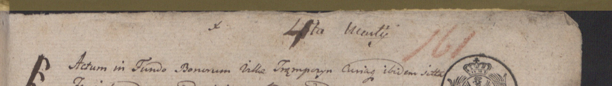
The register heading "4ta Martii" - does a year follow it on the page?
…4ta Martii Actum in Fundo Bonorum Villae Trąmpczyn Curiaque ibidem sitta Feria secunda post Dominicam Judica Quadragesimalim proxi- ma die s…
The entry records an actum of 29 March 1784 (the weekday formula fits 1784 exactly, and its own narrative says "anno immediate elapso 1783" for the December terminus - the year 1783 now read on the page). If the heading carries a year, it says when the relation was registered.
Names
termilis
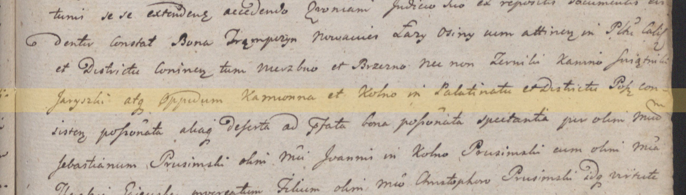
The estate name before "Kanino" - read it ("Termilis"? "Ternilis"?)
… Łazy Osiny cum attinentiis in Palatinatu Calis[ssens?][Kalisz] et Districtu Coninen[sem?][Konin] tum Wierzbno et Brzezno nec non Termilis[?] Kanino[?] Swiąt[niki?] Jaryszki atque oppidum Kamionna et Kolno in Palatinatu et Districtu Pos~[Poznan] consisten~ possessoria…
It stands again on 163v ("Bona Ternilis[?] Kanino Swiątniki et Jaryszki"), disposed of in other hands before 1729. Read the letters.
odechowski
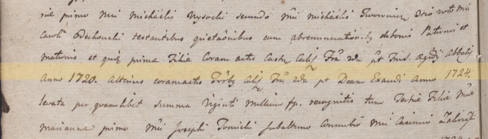
The husband of Victoria in "3tio voto ... Odechowski" - read the word
…cis Constantiae Magnifici Joannis Kowalski Victoriae primo Magnifici Michaelis Wysocki secundo Magnifici Michaelis Tworowicz 3tio voto Mica[w?]li Odechowski testantibus quietationibus cum abrenunciationibus[?] de bonis Paturnis et Maturnis et quidem primae Filiae coram…
On 164v the same couple stands as "Magnificorum Caroli et Victoriae itidem de Prusimskie Odechowskich conjugum". If the word here is "Michaeli", the two passages disagree and the genealogy follows the better attested one.
zabriski
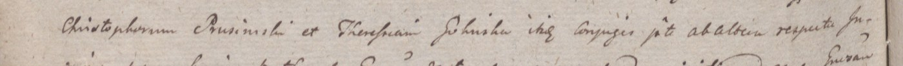
The name after "Magnifici Casimiri" - Mariana's second husband
…ginti millium fp recognitis tum Tertiae Diliae Magnificae Mariannae primo Magnifici Josephi Tomicki subalterno connubio Magnifici Casimiri Zabriski[?] Judicio Terrestris Brestensis[?] Cujaviae Testamentaria Parentali dispositione in anno 1729 ante[auto?] fata patrini condita i…
"subalterno connubio Magnifici Casimiri Zabriski[?] Judicio Terrestris Brestensis" - the surname to read.
strzalko
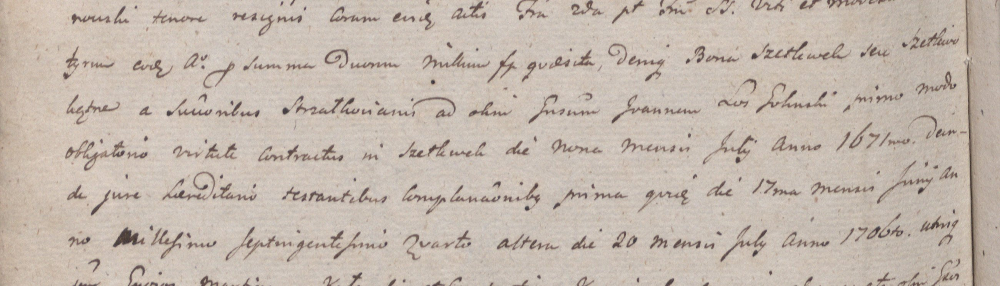
The name after "a succ~oribus" - who held Szetlewek before Golinski?
…t Modesti Martyrum eodem anno[?] pro summa duorum millium fp quaesita[?], denique Bona Szetlewek seu Szetlewo kątne a succ~oribus Strzałko[?]iamis[?] ad olim Generosum Joannem Los Golinski primo modo obligatoris virtute contractus in Szetlewek die nona mensis Julii anno 1671m…
"a succ~oribus Strzałko[?]iamis[?]" - the two words after "successoribus" both stand open.
rzekicka
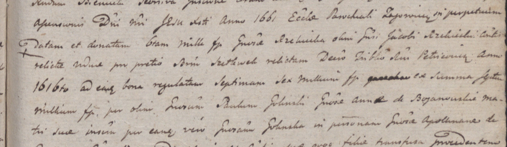
The widow's name and her husband's - "Generosae Rzek[?]icka olim Generosi Jacobi Rzechicki[?]"
…omini N[ostri?] Jesu Christi anno 1661 Ecclesiae Parochiali Zagorowiens[i?] in perpetuum datam et donatam 6tam mille fp Generosae Rzek[?]icka olim Generosi Jacobi Rzechicki[?] con~tis relictae viduae pro pretio Bonorum Szetlewek relictam Decreto Tribunalio Regni Petricov…
A Raczycki family stands in the entry already (a load of 7,000 fl.); if these are they, the index joins them.
obiesierski
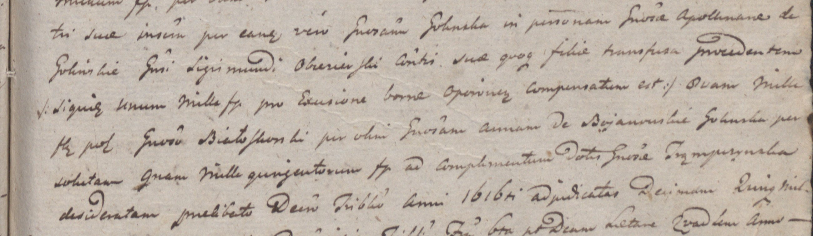
The husband of Apollonia - "Generosi Sigismundi Obiesierski[?]"
…skie matis suae infrascriptum per eandem vero Generosam Golinska in personam Generosa Apollinare de Golinskie Generosi Sigismundi Obiesierski[?] con~tis suae quoque filiae transfusa procedentem (siquidem[?] unum mille fp pro exusione borrae Oporow[sem/dem??] compensatum …
The surname to read.
obierunskie
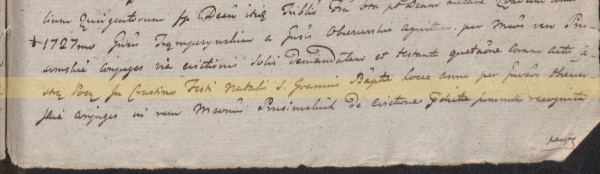
The family name - "a Generosis Obierun[?]skie" (it stands twice)
… quingentorum fp Decreto itaque Tribunalio Feria 6ta post Deum Laetare quadlem[?] anno 1727mo Generosis Trąmpczyńskim a Generosis Obierun[?]skie agnitum per Magnificos vero Prusimskie conjuges via evictionis solis demandatam et testante quietatione coram actis Castrensen Po…
The family that released the 6,000 fl. to the Trąmpczyńskis in 1727.
keszycki
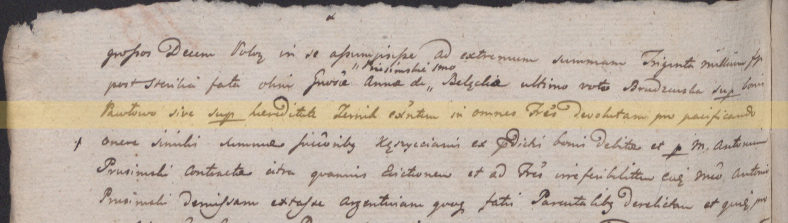
The name after "successoribus" - "Kęszy[?]ciami[?]"
…łowo sive super haeredetate Zernik exn~tem in omnes Fratres devolutam pm[per?] pacificandem onere simulis summae success[or?]ibus Kęszy[?]ciami[?] ex praedictis bonis debitae at pro Magnificum Antonium Prusimski cont[r?]actae intra quan[?]is evictionem et ad Fratres irrefe…
The successors holding the 30,000 fl. charge on Pawłowo / Zernik.
schedas_word
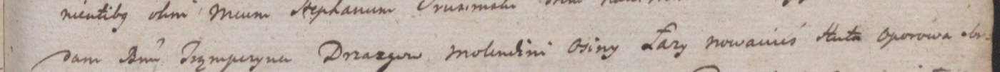
The word before "schaedas trinas" - read it
…e Paturnae vel Maturnae [??] actu superius expresso confuisse atque Magnificum Antonium Prusimski Fratram natu majorem [?]sc[h/t?]aedas trinas cum appositis Bonorum pretiis Junioribus[?] Fratribus ad eligendum porrexisse itaque primam schaedam[?] Bonorum Kolna et Oppidi Kamionna cum li…
"Fratram natu majorem [?]sc[h/t?]aedas trinas ... porrexisse" - what stands before "schaedas"?
ittis
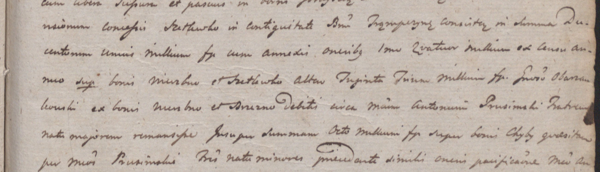
The word after "Se~ Rae~" - the office of Paul Prusimski
…czycki 5to Duorum Millium fp Generoso Pomorski itidem[?] provenient[?] olim Magnificum Paulum Prusimski Succamerarium Se~ Rae~ [?]ittis Fratrum intermedium acceptasse Tertiam Schaedam Bonorum Wierzbna Brzezna sortium Prusimscum libera sussura et pascuis[?] in borri Gorajsce~ et Krobie…
"Se~ Rae~ [?]ittis Fratrum intermedium" - on 162 the same man is "Succamarariis" (podskarbi). Read what stands here.
costensem
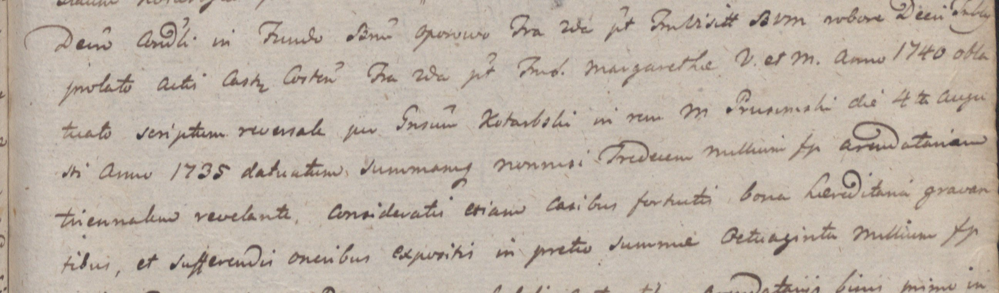
The court of the Oporowo condescensio - "actis Castrensis Costensem[?]"
…Condicionali in Fundo Bonorum Oporowo Feria 2da post Ferium Visit[atione?] BVM robore Decreti Tribunalii prolato actis Castrensis Costensem[?] Feria 2da post Ferium S. Margarethae V et M anno 1740 oblatuato scriptum reversale[?] per Generosum Kotarbski in rem[?] M Prus…
Oporowo lay in the Poznań palatinate; read the court's name.
skoli

The estate name - "in Fundo Bonorum Skoli[s?]"
…Capitaneum Niesczeviensem pro Terminis Condescenionis in Fundo Bonorum Skoli[s?] mente Decreti Terrestris Gnesnensis[?] agitatae Termino adcitatoris coram actis Castrensis Calissiensis Feria 2da in Crastino…
The grounds where the condescensio termini were held before the decree of Gniezno remitted the cause. Read the name.
flottowa
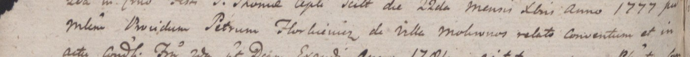
The name after "Magnificam" - "[Fl/H?]ottowa"
…er suum Plen~tem comparentem hocce scriptum ultimarium in originali reposuisse succ~ores vero Radolinscianos et Magnificam [Fl/H?]ottowa non manu olim Magnifici Andrae Radolinski scriptum et subscriptum esse intulisse et non tantum comprobationem Juratoriam obtuliss…
She stands beside the Radoliński successors disputing the letter of 1736. Read the name.
mokronos
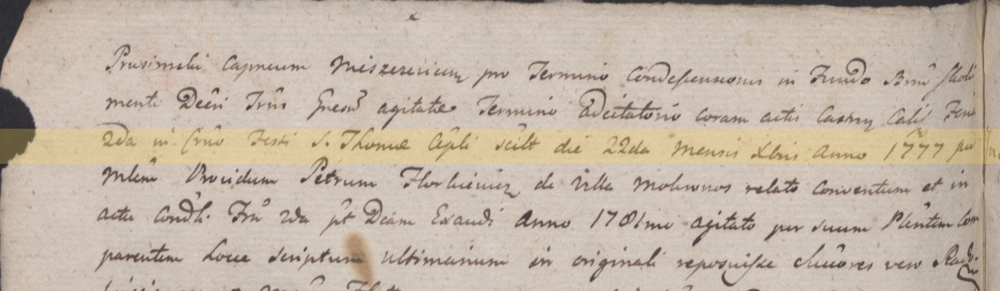
The village of Peter Florkiewicz - "de Villa Mokronos[??]"
…a in Crastino Festi S. Thomae Apostoli scilicet die 22da Mensis Xbris anno 1777 p[er?] Mle~m Providum Petrum Florkiewicz de Villa Mokronos[??] relato conventum et in actu Condicionali Feria 2da post Dominicam Exaudi anno 1781mo agitato per suum Plen~tem comparentem ho…
Read the ending of the village name.
lubraniecki
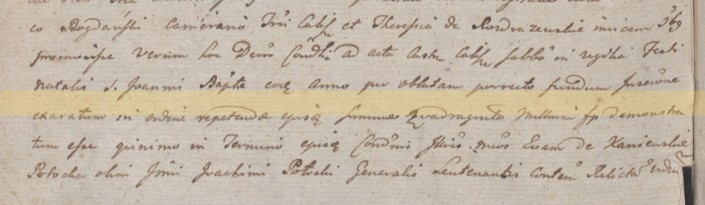
The name of the Kalisz chamber judge - "Magnificis Lu[s?]br[?]co Bogdanski"
…ti Ss~mi Corporis Christi Dm~ die scilicet 3tia mensis Junii anno 1782 potestate Tribunalia agitatae cum Magnificis Lu[s?]br[?]co Bogdanski Camerario Terrestri Calissiens[i?] et Theresia de Rozdrazewskie invicem[?] [?]bus~ pro[?]isse verum hoc Decreto Condicionali ad a…
He took part with Theresia née Rozdrażewska in the act of 3 June 1782. Read both name words.
marszlyn
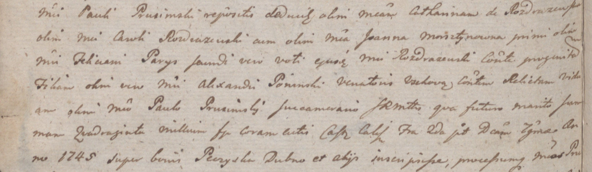
Joanna's family name - "Marszłynowna[?]" (the mother of Katarzyna Rozdrażewska)
…simski repositis deducidem olim Magnificam Catharinam de Rozdrzewski olim Magnifici Caroli Rozdrazewski cum olim Magnifica Joanna Marszłynowna[?] primi olim Magnifici Feliciani Parys sa[is/m?]di vero voti ejusdem Magnifici Rozdrazewski con~te progenitam Filiam olim vero M…
A patronymic in -ówna would be the only one in the entry. Read the letters.
sadi
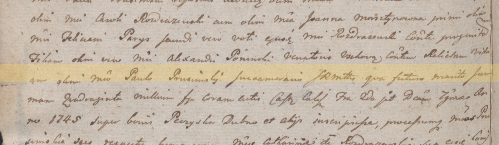
The word after "Feliciani Parys" - "sa[is/m?]di"?
…arinam de Rozdrzewski olim Magnifici Caroli Rozdrazewski cum olim Magnifica Joanna Marszłynowna[?] primi olim Magnifici Feliciani Parys sa[is/m?]di vero voti ejusdem Magnifici Rozdrazewski con~te progenitam Filiam olim vero Magnifici Alexandri Poninski Venatoris Vscho…
The sense points to "secundi (voti)" - of her second marriage, to Karol Rozdrażewski - after "primi ... Feliciani Parys". Read the letters.
Sums
nierzychow_sum
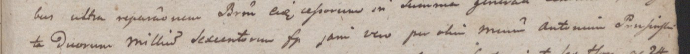
The widow Nierzychowska's load - "[?]ginta millium fp"
…erosi Raczycki septem millium fp Generosi Pomonski Duorum [?] uno fp suc~corum Radolensianorum[?] Quadraginta millium fp Generosa Nierzychowska [?]ginta millium fp atque Generosorum Dziembowskich viginti[?] Trium millium fp Generos[?] [?]kowski septingentorum fp Generosi O…
The same widow's claim is "Triginta millium fp" on p. 167, and on 164 her load is "Triginta Millium fp". If the page says octoginta here, the scribe slipped; if triginta, the reading is settled.
triginta_veto
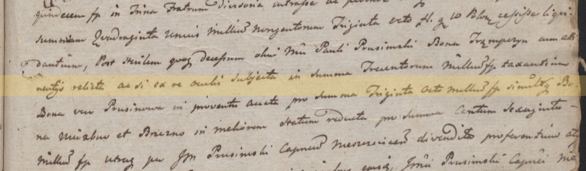
The word after "nongentorum Triginta" - "veto[?]"?
…fp in Tnna~ Fratrum divisoria intrasse ac perinde cui[que?] Fraterno Capiti nonim[?] summam quadraginta unius millium nongentorum Triginta veto[?] fl. g~ 10 Polonicalium cessisse li[?]dantium, post [h/st?]erilem[?] quo~ decessum olim Magnifici Pauli Prusimski Bona Trąmpczy…
The share of each fraternal caput: 41,930 fl. + this word. "octo" would complete the figure.
kowski_name
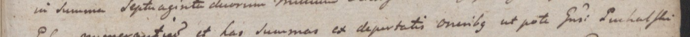
The name before "-kowski" (a load of 700 fl.)
…a millium fp Generosa Nierzychowska [?]ginta millium fp atque Generosorum Dziembowskich viginti[?] Trium millium fp Generos[?] [?]kowski septingentorum fp Generosi Obarzankowski[?] Triginta Trium Millium fp Generos[?] [?]bowski sexcentorum sexuginta sex fl. gn[?] 20 Polonicalium G…
"Generos[?] [?]kowski septingentorum fp" - the surname is cut at its start. Read what stands.
bowski_name
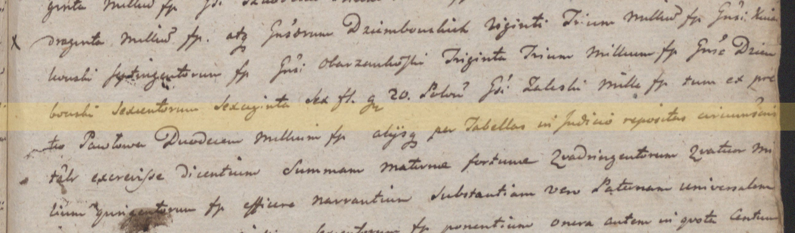
The name before "-bowski" (a load of 666 fl. g. 20)
…inti[?] Trium millium fp Generos[?] [?]kowski septingentorum fp Generosi Obarzankowski[?] Triginta Trium Millium fp Generos[?] [?]bowski sexcentorum sexuginta sex fl. gn[?] 20 Polonicalium Generosi Zaleski Mille fp tum ex [?]tio Pawłowa Duodecem Millium fp aliisque per Tabellas…
"Generos[?] [?]bowski sexcentorum sexuginta sex fl." - read the surname.
money_formula
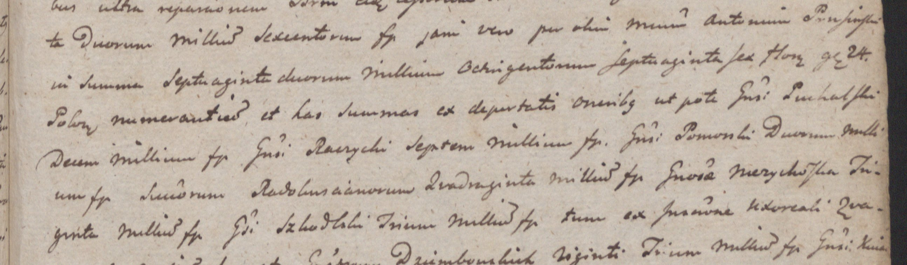
The money formula after the figures - here "sex tlor~[??] ge~[?]"
…excentorum fp[?] jam vero per olim Magnificum Antonium Prusimski in summa septuaginta duorum millium octuigentorum[?] septuaginta sex tlor~[??] ge~[?] Polonicalium numerantia~ et ha[s?] summas ex deportatis oneribus ut pote Generosi Puchalski Decem Millium fp[?] Gener…
Elsewhere the entry writes "fl. g~ 20 Polonicalium" and "flor~ gros~ 5 Polon~". Read what stands in this line (the same question covers "fl. gn[?] 20" two lines below).
pawlowa_word
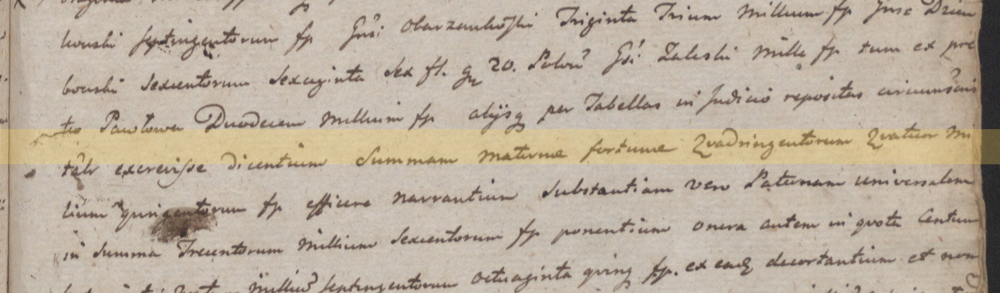
The word before "Pawłowa" - "ex [?]tio Pawłowa"
…Trium Millium fp Generos[?] [?]bowski sexcentorum sexuginta sex fl. gn[?] 20 Polonicalium Generosi Zaleski Mille fp tum ex [?]tio Pawłowa Duodecem Millium fp aliisque per Tabellas in Judicio repositas curium[?] tal~r exercisse dicentium summam maternae fortunae quadringentoru…
The 12,000 fl. charge "from the ... of Pawłowa" - read the word.
Words
reponidem
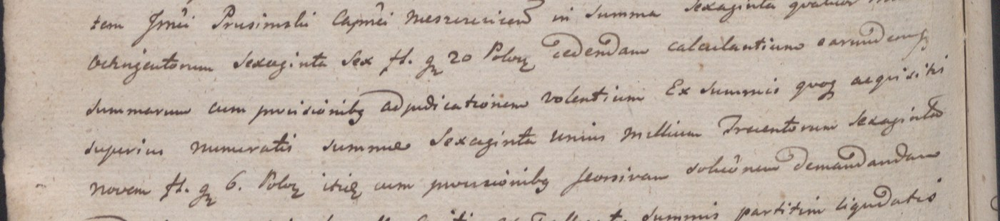
"quietatio ... non reponi[dem?]" - the verb form
…a cathegoria contra Religiorissimum Abbatem et Venerabilem Conventum Landensem introducta quoniam per cittos~ queta~o de summa et argentina extraditis non reponi[dem?] ideo quartem sortem ex summa Trium[?] Millium quingentorum[?] aureorum nummuorum atque ex adinvenienda quota pro argentiis …
The quietation of the 3,500 ducats and the silver was not brought back into court. Read the ending.
procet
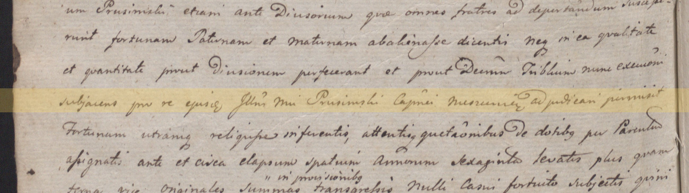
"procet[?] divisionem perfecerant et procet[?] Decretum" - the word (it stands twice)
…res ad depertandum susceperunt fortunam Paturnam et Maturnam abalienasse[?] dicentis neg~ in ea qualitate et quantitate procet[?] divisionem perfecerant et procet[?] Decretum Tribunalium nunc executioni[?] subjacens pro re ejusdem Illustrissimum Magnifici Prusimski Capitanei Nieszc…
Read the word: the division was completed "in that quality and quantity" ...
quirrimo
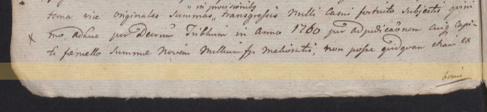
"nulli casui fortuito subjectus quirrimo[?]" - the word
…m annorum sexaginta levatis plus quam terna vice[?] originales summa in provisionibus transgressis nulli casui fortuito subjectus quirrimo[?] adhuc per Decretum Tribunalium in anno 1760 per adjudicationem cuiq[ue?] capiti femaello[?] summae novem millium fp melioratis…
The sums had out-run their provisions for more than sixty years; read the word after "subjectus".
quani
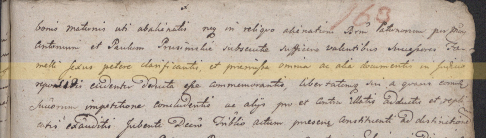
"libertatemque sui a quani[?] eorundem successorum impetitione" - the word
…ficantis, et praemissa omnia ac alia documentis in Judicio repositis[?] ei[?]denter deducta esse commemorantis, libertatemque sui a quani[?] eorundem successorum impetitione concludentis ac aliis pro et contra illatis adductus et replicatis exauditis Jubenti Decreto …
Read the word after "a".
brtis
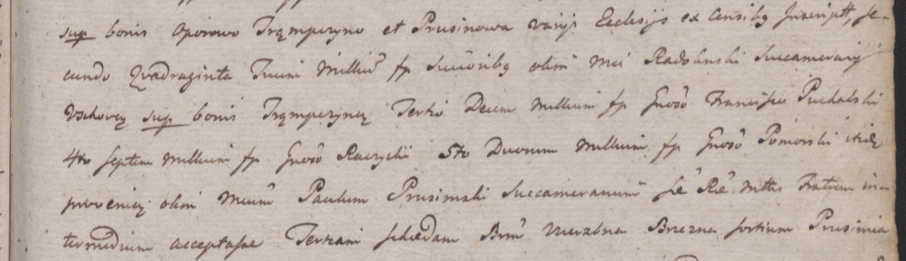
The word between "Oporowa" and "Oporowka" - "[br?]tis"
…ephanum Prusimski Fratrum natu minimum eligisse[?], secundam [sch?]edam Bonorum Trąmpczyna Drzezgow Molendini Osiny Łazy Nowawieś Huta Oporowa [br?]tis Oporowka Kałowa, Podbiele et Prusinowa in summa Decentorum Quinquaginta quatuor millium fp cum applicatis debitis Primo …
The second scheda lists "Oporowa [br?]tis Oporowka Kałowa" - the Oporowo with its parts Oporówka and Kałowo. Read the word.
hisc_e
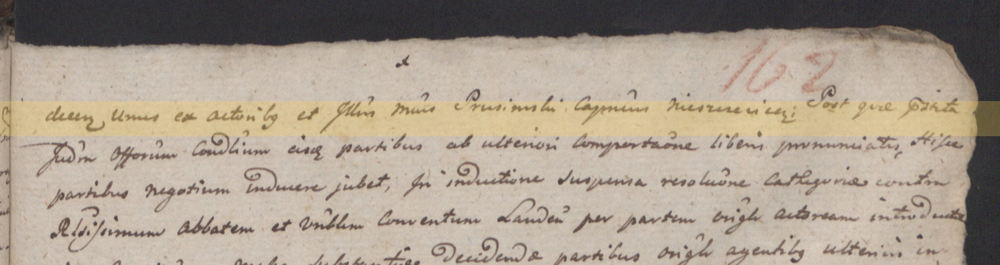
"liberi pronunciatis, hisc[e?] partibus negotium inducere jubet" - the word
…czeviensi post quae prost[?] Judiciorum Officiorum Conditionalium eisdem partibus ab ulteriori comportatione liberi pronunciatis, hisc[e?] partibus negotium inducere jubet, in inductione suspensa resolutione cathegoriae contra Reverendissimum Abbatem et Venerabilem Conventum L…
Read the word before "partibus".
auguratem
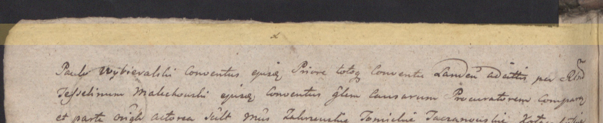
"terminus ... in augurat[em?] intercessit" - the word
…ando quidem Terminus ejusmodi adcitatorius ad mentem resolutionis Decreti Tribunalii virtute cujus actii praesens in augurat[em?] intercessit ideo praedicto Termino lt~mo declarato prosequan[dem?] In prosequendo quoniam Decreto Tribunalio nunc executivo Comportatio documentionem massas substan…
The summons term lapsed "in ..." - read the word.
addidem
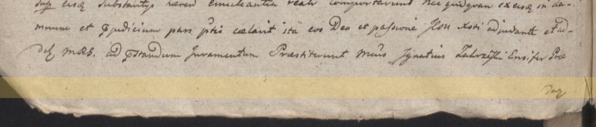
"adjudante et addi[dem?] mae[s?] ad prostrandum Juramentum" - the two words
…aeren[dem?] em[?]lcantia realiter comportarunt nec quidquam ex eisdem in damnum et projudicium pars partes caelant ita eos Deo et passione Jesu Christi adjudante et addi[dem?] mae[s?] ad prostrandum Juramentum Prastiterunt Magnificus Ignatius Zakrzewski Ensifer…
Before the oath was taken. Read both words.
adpsit
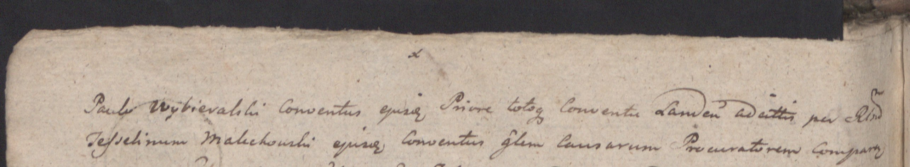
"aliquod documenta ad[?]psit et subscripsit" - the verb
…ua corroborant nec non Illustrissimus Magnificus Prusimski Capitaneo Nieszczeviecen[sem?] ad summarium proprium aliquod documenta ad[?]psit et subscripsit atque ob non persistentiam iterum in hac comportatione juramenta partes obtulerunt quibus Judicium Officiorum Cond…
He attached some documents to his summary and subscribed. Read the letters in the middle.
minipali
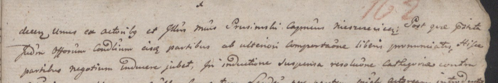
"agentibus ulteri[us?] in minipali[?] negotio" - the word after "in"
…e Actoream introduct[?] circa Constitutionem Massa Substantiae decidendae partibus originali agentibus ulteri[us?] in minipali[?] negotio procidere mandat In procedendo controversiis partium ut pote Mio~rum Zakrzewskich Tomickich Taczanowskich Kołaczkowskich et Tworowicz respectu suc…
The session continues "in the ... business". "principali" is proposed from sense; read the letters.
go_naniae
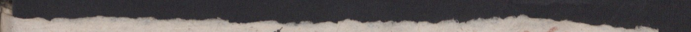
"Feria 2da ante Festum Assumptionis in actum[?] Go[?]naniae[?] anno 1737" - the two words
…coram actis Castrensis Posnaniensis[?] Feria 2da ante Festum Assumptionis in actum[?] Go[?]naniae[?] anno 17[3?]7 levasse in super in actoratu[?] per Generosos Kowalskie pro melioratione dotis ac successione post sterilem deces…
The complanatio of Mariana's dowry was levied at Poznań on the Monday before the Assumption. Read the two words after "in actum".
eisneunt
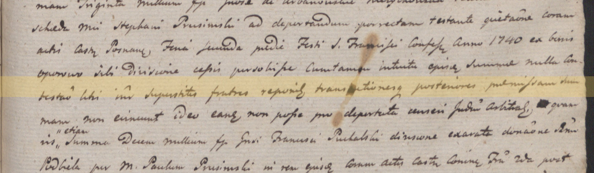
"transactionesque posteriores praemissam summam non eisneunt[?]" - the verb
…jisdem summae nulla contest~ao litis[?] inter superstitus fratres reponi[dem?] transactionesque posteriores praemissam summam non eisneunt[?] ideo eandem non posse pro deportata censci[?] Judicium Arbita[tem?] quam vis etiam summa Decem millium fp Generosi Francisci P…
The later transactions do not ... the sum of 30,000 fl. Read the verb.
hendo
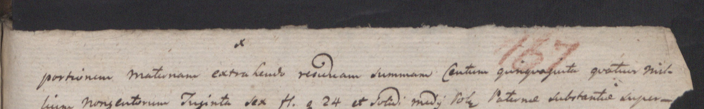
"portionem Maturnam extra hendo[?]" - the word
…portionem Maturnam extra hendo[?] residuam summam centum quinquaginta quatuor millium nongentorum triginta sex fl g~ 24 et solidi midii Polon~ Paternae substant…
Read the word after "extra".
compin
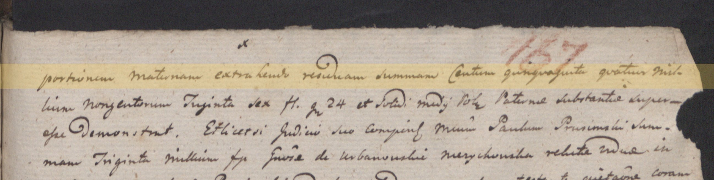
"si Judicio suo co[m/ns]pin[dem?]" - the word
…lium nongentorum triginta sex fl g~ 24 et solidi midii Polon~ Paternae substantiae super esse demonstrat. Et licet si Judicio suo co[m/ns]pin[dem?] Magnificum Paulum Prusimski summam Triginta millium fp Generosae de Urbanowskie Niezychowska relictae viduae in scheda Magnific…
Read the word after "co".
arbitatem
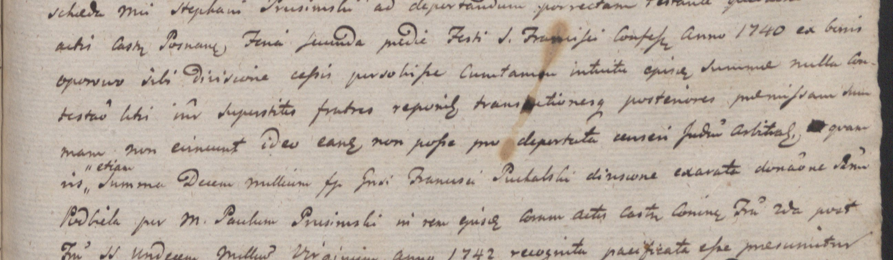
"Judicium Arbita[tem?]" - the word
…est~ao litis[?] inter superstitus fratres reponi[dem?] transactionesque posteriores praemissam summam non eisneunt[?] ideo eandem non posse pro deportata censci[?] Judicium Arbita[tem?] quam vis etiam summa Decem millium fp Generosi Francisci Puchalski divisione exarata donatione Bo…
Read the ending.
insto
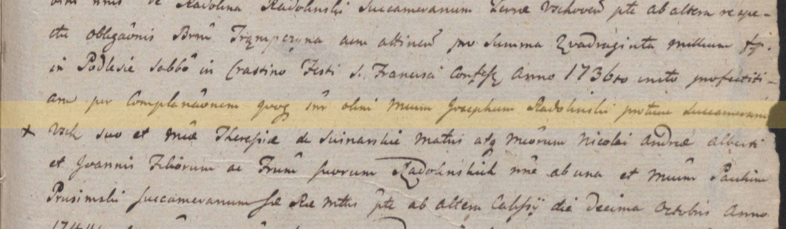
"anno 1736to insto[?] profectitiam" - the two words
…um attinen[tis?] pro summa quadraginta millium fp in Podlesie sab~bo in Crastino Festi S. Francisci Confess~ anno 1736to insto[?] profectitiam per complena~onem quoque inter olini Magnificum Josephum Radolinski protunc Succamerano Vschovensem suo et Magnificae Theresiae de Suinarskie …
Read what stands before "profectitiam".
subtam
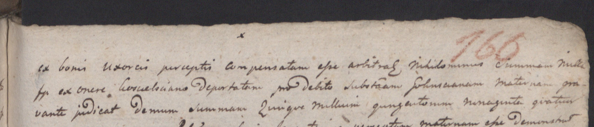
"pro debito subta~am Golinscianam maturnam gravante" - the word
…s uxorcis perceptis compensatam esse arbitradem nihilominus summam mille[?] fp ex onere hoscie[l?]sciano[?] deportatam pro debito subta~am Golinscianam maturnam gravante judicat demum summam quinque millium quingentorum nonaginta quatuor flor~ grossorum quinque Polonicalium ex bon…
Read the word: the maternal Golinscian debt bearing down.
ressibilibus
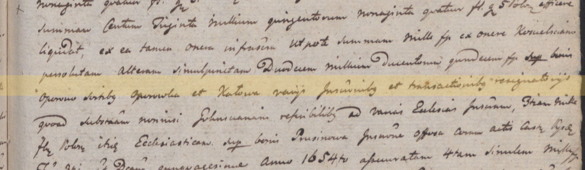
"res[s?]ibilibus ad varias [E?]ulesias" - the two words
…quindecem fp super bonis Oporowo sortibus Oporowka et Kałowa variis Ins~iso~ibus et transactionibus resignatoriis quoad substa~am non nisi Golinscianam res[s?]ibilibus ad varias [E?]ulesias Ins~cram[inscriptam?], [3/E?]tiam mille fl Polonicalium itidem Ecclesiasticam super bonis Prusi…
The inscriptiones of Oporowo ran to various churches. Read both words.
exdiuim
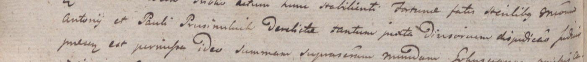
"Determinata ... Maturnae substantiae exdiuim[?]" - the word
…em millia Trecentos nonaginta sex fl gr~ 15 solidos duos cum midio com[j/p?]etere judicat Determinata itaque Maturnae substantiae exdiuim[?] schaeda quoque Bonorum Oppidi Kamionna et Kolna olim Magnifico Stephano Prusimski olim Magnifici Antonii Prusimski Capitanei N…
Read the word after "substantiae".
illas_manente
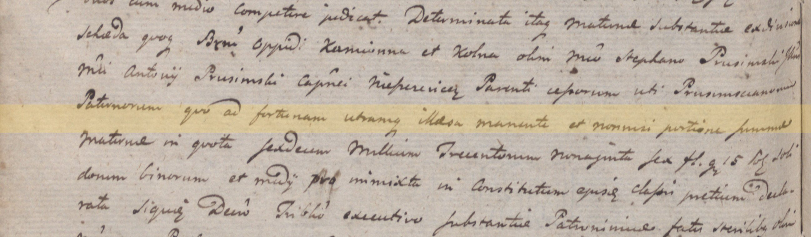
"quo ad fortunam utramque illa[s/m?] manente" - the word
… Stephano Prusimski olim Magnifici Antonii Prusimski Capitanei Nieszczeviens[em?] Parenti cessorum uti Prusimscianorum Paturnorum quo ad fortunam utramque illa[s/m?] manente et non nisi portione summae maturnae in quota sexdecem millium trecentorum nonaginta sex fl g~ 15 Pol~ soli do…
Read the word after "utramque".
pro_mimixta
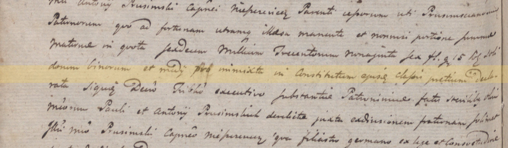
"soli donum binorum et midii pro[??]" - the two letters
…a[s/m?] manente et non nisi portione summae maturnae in quota sexdecem millium trecentorum nonaginta sex fl g~ 15 Pol~ soli donum binorum et midii pro[??] mimixta in constitutum ejusdem classi pretium declarata liquidem Decreto Tribunalio executivo substantiae Patronimiae fatis s…
After "duorum et medii" - read what stands before "mimixta".
summus
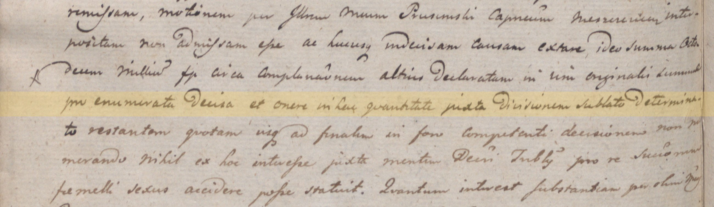
"in uni originalis summ[us?]" - the ending
…tam non admissam esse ac hujusque indecisam causam extare, ideo summa octodecem millium fp circa complanationem altius declaratam in uni originalis summ[us?] pro enumerata decisa et onere in hac quantitate juxta divisionem sublato determinato restantem quotam [?]isque ad finalem in…
Read the ending of the word.
scriptuis
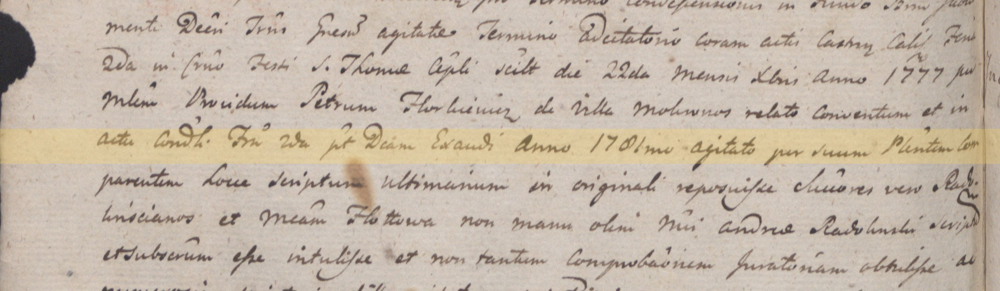
"numeraris scriptu[?]is" - the ending
…Magnifici Andrae Radolinski scriptum et subscriptum esse intulisse et non tantum comprobationem Juratoriam obtulisse ac numeraris scriptu[?]is differ[?]itatem scriptionis propalasse[?] verum Inquisitionem exoptasse tal~rque[taliterque?] pro educendo scrutinio causam hanc …
Read the ending.
differ
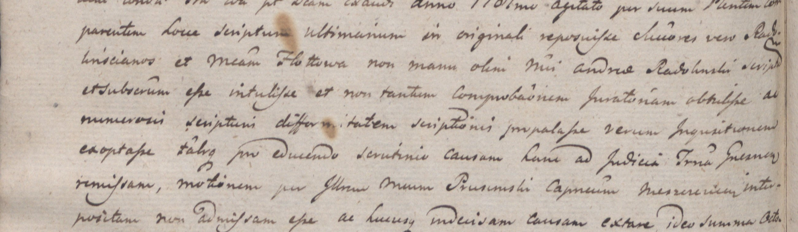
"differ[?]itatem scriptionis" - the word
…rae Radolinski scriptum et subscriptum esse intulisse et non tantum comprobationem Juratoriam obtulisse ac numeraris scriptu[?]is differ[?]itatem scriptionis propalasse[?] verum Inquisitionem exoptasse tal~rque[taliterque?] pro educendo scrutinio causam hanc ad Judicia Terre…
The hand of the letter of 1736 was not that of the late Andrew Radoliński. Read the word.
gmae
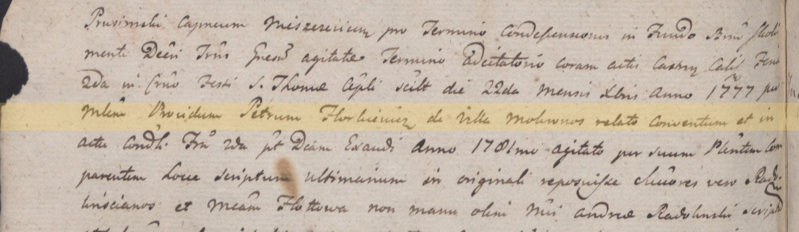
"post Dominicam [?]gmae~ anno 1745" - the word
… anno 1777 p[er?] Mle~m Providum Petrum Florkiewicz de Villa Mokronos[??] relato conventum et in actu Condicionali Feria 2da post Dominicam Exaudi anno 1781mo agitato per suum Plen~tem comparentem hocce scriptum ultimarium in originali reposuisse succ~ores vero Radolin…
The Sunday before which Katarzyna's 40,000 fl. were inscribed. Read the word.
prodisse
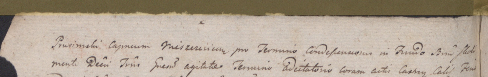
"[?]bus~ pro[?]isse" - the two words
…gitatae cum Magnificis Lu[s?]br[?]co Bogdanski Camerario Terrestri Calissiens[i?] et Theresia de Rozdrazewskie invicem[?] [?]bus~ pro[?]isse verum hoc Decreto Condicionali ad actu Castrensis Calissiensis sabbo~ in Vigilia Festi Natalis S. Joannis Baptiste eodem anno per…
Before "verum hoc Decreto Condicionali" - read what stands.
subdapiferida
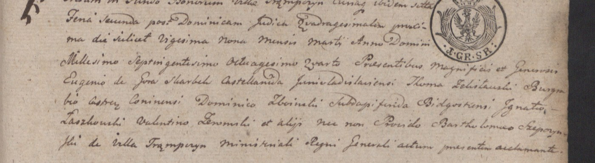
"Dominico Zboinatis Subdapifinda[?] Bidgostiensi" - the office form and the family name
…sis Eugenio de Gora Skarbek Castellanida Junivladislaviensi Thoma Zelisławski Burgra- bio Castrensis Coninensi Dominico Zboinatis Subdapifinda[?] Bidgostiensi Ignatio Łaszkowski Valentino Zeromski et aliis nec non Provido Bartholomeo Szepczyń- ski de Villa Trąmpczyno Mini…
The scribe's office forms run -ida: "Castellanida" here, "Dapiferidae" in Konin Gr.118, "Thesaurarida" in Gr.117. Read the letters after "Subdapifer" and the name before it.
Proposals
p_diversae
"dive[n/r?]ae formae" - proposed: "diversae formae" - rule
…tela seriam colo[r?]is rubri per ornando uno conclavi: jam vero pro parte olim Magnifici Pauli Prusimski argenteriam dive[n/r?]ae formae in marcis toti[dem?] et semuniis duodecem nec non [P/V?]elles Zebellinas part[?] fata Parentum relictas per MAgnificum Antonium P…
The silverware of the late Stephen Paul and Antoni, "of ... form".
p_conges
"[?]ges~" (three places) - proposed: "con~ges~" (conjuges) - rule
…in Wierzbno die 24 Mensis Maj anno 1737 inter Magnificos Antonium et Joannem Prusimskie ab una atque eodem Magnificos Tomickie [?]ges~ parte ab altera…
The couples of the complanatio lines; the sibling units write "conjuges" unflagged.
p_solutam
"[lu?]atam" - proposed: "solutam" ("as if paid over by Kałowski") - rule
…ificum Prusimski virtute intercisae nuptialis Magnificae Theresiae de Golinski consorti suae ac si à Magnifico Kałowski [lu?]atam assurasse summam ven mille f[g?] Pol~ ex onere Generosi Martini Kosewski de bonis Szetlewek departatam[?] Magnifico Kałowski exobatam exarasse in …
Read the letters before "atam".
p_sororem
"fororem[?]" - proposed: "sororem" ("this last sister") - rule
…estamentaria Parentali dispositione in anno 1729 ante[auto?] fata patrini condita in simili quantitate dotes assignatus fuisse et hanc ultimam fororem[?] praecidente comp~lne in Wierzbno die 24 Mensis Maj anno 1737 inter Magnificos Antonium et Joannem Prusimskie ab una atque eode…
Mariana is the third daughter; "soror" fits the sense. Read the first letter.
p_kotarbski
"Kołarbski[?]" - proposed: "Kotarbski" (the family as on p. 165) - rule
…um adpunctis oneribus primo sexcentoum fp ex censu annus in Kolno inscripto altero viginti millium fp successoribus olim Generosi Kołarbski[?] Tertio Tredecem Millium fp Generoso Eustachio Kowalski 4to isidem[?] Tredecem Millium fp Generoso Urbanowski 5to Triginta Mill…
Read the fourth letter (ł or t).
p_alterius
"altenius [post/parte?]" - proposed: "alterius post" (the second wadion, made after the sterile death of 1708) - rule
…bastianum et Christophorum atque Ludovicum Fratres Prusimskie in[i?]tae et roboratae vadioque septies cen[?] millium fp furimatae altenius [post/parte?] sterilem obitum olim Magnifici Ludovici Prusimski Fratris germani in Kamionna die 23 Mensis Julii anno 1708uo condi…
"altenius" is not a Latin word. Read both words.
p_actis
"coram autis[?] Castrensis" - proposed: "coram actis Castrensis" - rule
… Relictam viduam olim Magnifico Paulo Prusimskii Succamerario SRMttis[honorific?] qua futuro marito summam quadraginta millium fp coram autis[?] Castrensis Calissiensis Feria 2da post Dominicam [?]gmae~ anno 1745 super bonis Peczyska Dubno et aliis inscripisse, processum…
The formula "coram actis Castrensis" stands four times in the entry. Read the letters.
p_autem
"jam autoni[?] indictionem" - proposed: "jam autem" - rule
…m OO Sanctorum anno 1738uo in compatentis[?] actionis cum irrogata paenalitti sup[er/ra?] MM Kowalski intercessisse jam autoni[?] indictionem Magnificae Mariannae de Prusimski Tomicka remotam esse [st/h?]is transactis praedictos Magnificos Antonium Paulum et Stephanum Fratres inter se german…
Read the word: "now however the indiction ... was removed".
Principles
pr_nieszwiez
The endings of "Nieszczeviec-" (the starost of Niszczewice, 12 places) were PROPOSED to be completed by the grammar of each sentence (dative -i, accusative -em, genitive -is), the scribe's stem kept - not applied; your fresh transcription keeps the doubts. Rule on the principle
…gnifico Francis[cum?] Tworowicz itidem actore et citto~ per eundem Illustrissimi Magnifico Antonio in Kolno Prusimski Ca- pitaneo Niszczeviens[em?] Insignis S. Stanislai Equite citto~ et actore personaliter Religiosissim[e?] Benedicto Lubstowski Conventus Landensis Sacri …
Sample rows: "Capitaneo Niszczeviens[em?]" here; "Capitaneum Nieszczevice[m?]" on 161v; "in archivo ... Nieszczevicen[em?]" on 161v. The same rule would complete ~100 other flagged case endings (the list with its witnesses: intake/split_and_settle.py).
pr_changes
The 108 readings applied in the morning session (case endings completed where the grammar admits one reading, formulas completed, the scribe's spellings kept) were WITHDRAWN when your fresh transcription of p. 161 kept the original doubts; they wait in intake/split_and_settle.py with the witness for each. Accept the lot (re-apply), or leave the text as you transcribed it?
This row needs no scan - it rules on the principle and the record.